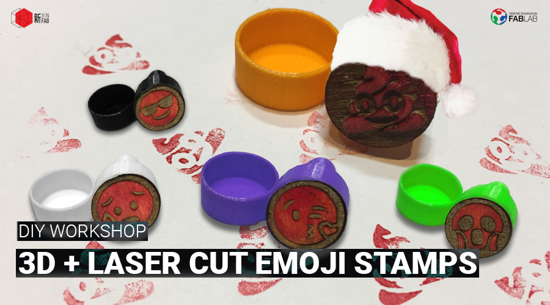
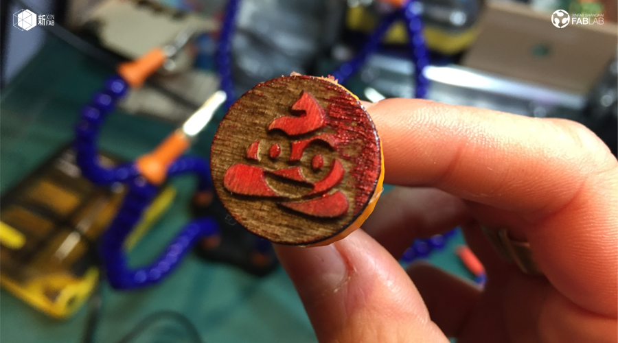
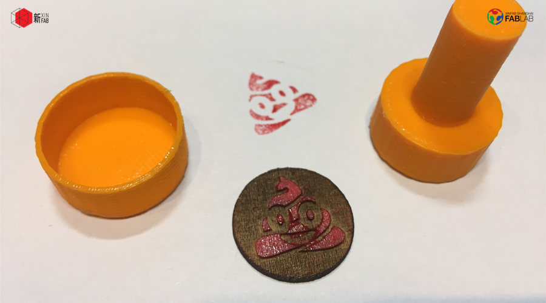
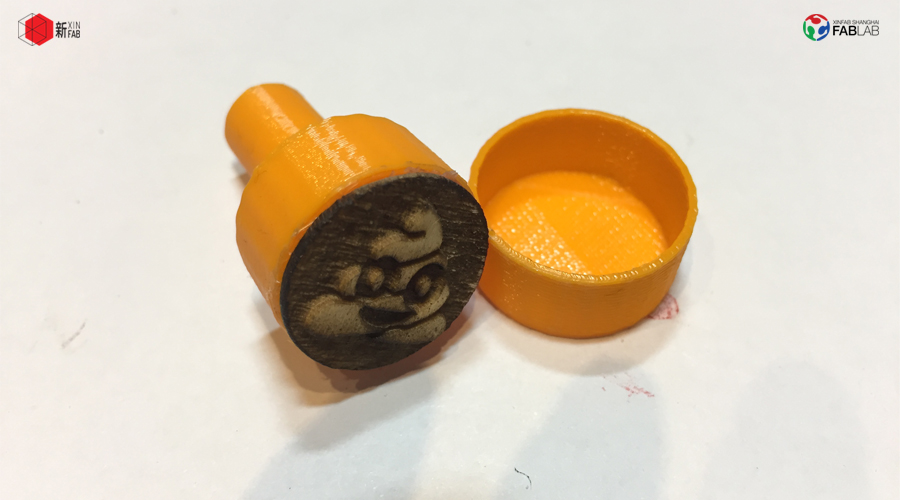
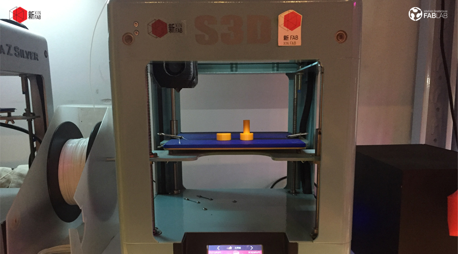
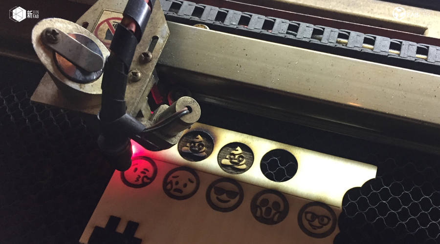

WORKSHOP
XMAS WORKSHOP: Emoji Stamps | 3D打印+激光切割印章

When:Thursday, December 14, from 5pm to 9pm
Where: Xinfab - Kangding East Rd, Lane 45, Building no.5, Room 102, Jing'an District
Price: 200 RMB (Wechat 210 RMB)
So, it's Christmas.
It means you'll be offering gitfs to your loved ones and along with those gifts, cards. Okay, maybe nowadays people just send each other messages over Wechat and in those messages, emojis. So why not make it more personal again by going back to an old tradition (cards) with a contemporary twist (emojis)?
In this workshop you're going to make emoji stamps to stamp your cards with. But more than making the stamps themselves, you'll take away with you a couple of digital fabrication skills: you'll learn how to 3D print the body, then we'll show you how to transform a simple image into vectors to, finally, laser engrave and cut the shape of your stamp.
And then you'll take your stamp home with you to either stamp your cards or offer them stamp itself as a gift!
Things you should bring:
// If you know how to use Illustrator, you can bring your laptop, charger and mouse and make stamps of anything
// If you don't know how to use Illustrator, don't worry. You'll still see how it gets done, learn how to use the laser and take your emoji stamp home with you
// Your passion, curiosity, and questions
Price includes:
_PLA (body) and wood (motif), at least 1 stamp (if time allows, you can make more)





WORKSHOP SCHEDULE
// STEP 1: 3D Modeling & Printing (Stamp's body)
_Intro to 3D printing technology and machines, materials for 3D printing, applications of 3D Printing
_Learn how to 3D print a 3D model
_Print the stamp's body
// STEP 2: Vectorize an image (demo) & Learn how to use the laser cutter (Stamp's motif)
_See how an image is transformed into vectors ( the emoji's downloaded from the internet)
_Prepare the file for the laser cutter
_Learn how to use the laser cutter
_Engrave and cut the emoji for your stamp
///////////////////////////////////
HOW TO SIGN UP
SIGN UP DEADLINE: WEDNESDAY, DECEMBER 13
// ALIPAY (200 RMB)
Transfer the workshop fee to pay@xinfab.com (please indicate your phone number on the payment details so we can contact you!)
// CASH (200 RMB)
Come by our lab during our opening hours to book your spot.
// WECHAT (210 RMB - Wechat charges a fee)
Enter our shop from your phone via this link and proceed to payment with Wechat Wallet
Questions? Send us an email to info@xinfab.com.
///////////////////////////////////
ABOUT THE TEACHER

Jade Young is a Brazilian communicator and Xinfab's manager. Before joining Xinfab, Jade worked in communication for the United Nations (International Labour Organization) and the International Committee of the Red Cross, in Geneva, Switzerland. She created posters and graphics for both organizations during her experience with them. She then complemented her education and experience in International Relations with a Master's in Advertising Design and Communication at the Barcelona School of Design and Engineering, in Barcelona, Spain.
While humanitarian values and non-profit philosophy are her credo, creating is her passion. Jade has loved to draw from a very early age and has been playing with different making techniques for over a decade. She has also been into tech since she got her first computer way back in 1998 and has been playing with all kinds of software ever since.
时间：12月14日星期四从下午5：00到9：00
地点： 新Fab- 静安区康定东路45弄5号102室
价格： 200元（微信210元）
***英语车间！老师的汉语不怎么样哦！****
圣诞节快要到。
这意味着你送你的亲人给礼物，以及那些礼物，问候卡。 好吧，也许现在人们只是通过微信，那些短信内容就是表情符号。 那么为什么不回到一个古老的传统（问候卡）与当代习惯（表情符号）？
在这个车间上，你要制作表情符号印章来盖印你的问候卡。 但是，除了自己制作印章之外，还会带走一些数字制作技能：学习如何制作一个简单的3D模型（印章的主体），学习如何3D打印，然后我们给你代表如何将简单的图像转换成矢量，最后你学习如何激光雕刻和切割印章的形状。
然后你会把你的印章带回家，盖印你的问候卡送给朋友，或者送印章自己给朋友们！
你应该带的东西：
// 如果你知道如何使用Illustrator，你可以携带你的笔记本电脑，充电器和鼠标，并制作任何东西的印章
// 你如果你不知道如何使用Illustrator，请不要担心。 你仍然会看到它是如何完成的，学习如何使用激光切割机，并把你的表情符号印章带回家
// 你的激情，好奇心和问题
价格包括
_PLA（主体）和木材（形状), 最少1个印章 （来得及的话你可以多一些做）
///////////////////////////////////
研讨会日程安排
// 第一步：3D建模＆打印（印章的主体）
_介绍3D打印技术和机器，3D打印材料，3D打印应用
_了解如何3D打印
_打印印章的身体
// 第2步：向量化图像（演示）和学习如何使用激光切割机（印章图案）
_看看一个图像如何转换成矢量（从互联网下载的表情符号）
_准备激光切割机的文件
_了解如何使用激光切割机
_刻上你的邮票并剪切表情符号
///////////////////////////////////
如何注册
注册截止日期：12月13日（星期三）
// 支付宝（200 RMB）
将研讨会费用转至 pay@xinfab.com（请在付款明细上注明您的电话号码，以便我们与您联系！）
// 现金（200 RMB
由我们的实验室在我们的开放时间来预订你的位置。
// 微信（210 RMB - 微信收费）
有问题吗？ 发邮件到info@xinfab.com.
///////////////////////////////////
关于教师
Jade Young是巴西传播者和新fab的经理。 Jade在加入新fab之前，先后在瑞士日内瓦的联合国（国际劳工组织）和红十字国际委员会工作。 她为两个组织制作了海报和图像。 然后，她在西班牙巴塞罗那巴塞罗那设计与工程学院的广告设计与传播硕士学位中补充她的国际关系教育和经验。
尽管人道主义价值观和非营利哲学是她的信条，创造是她的激情。 Jade从小就喜欢画画，十多年来一直在用不同的制作技巧。 自从1998年获得第一台计算机以来，她也一直在科技领域工作，从那以后一直在玩各种各样的软件。